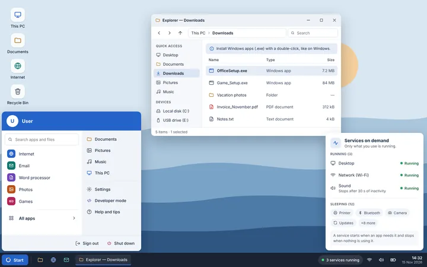
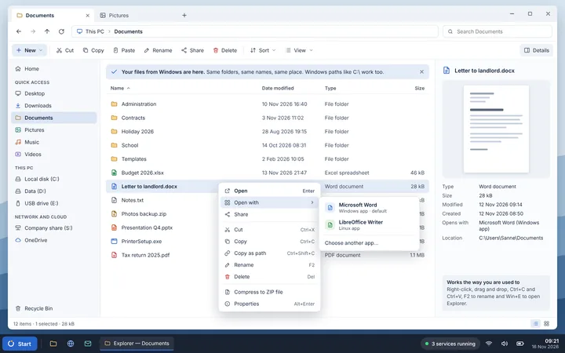
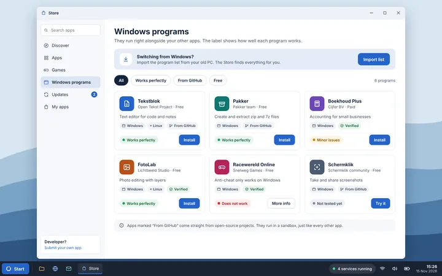
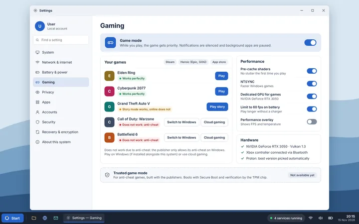
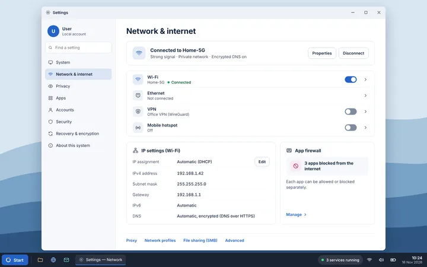
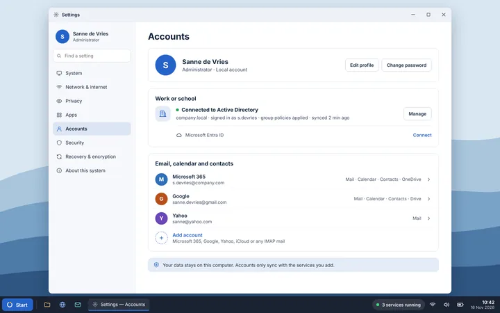
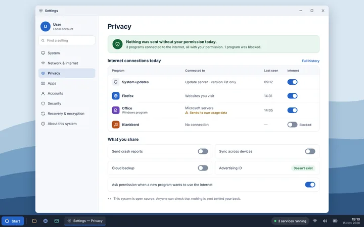
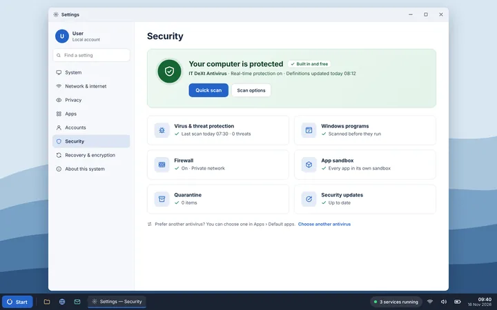
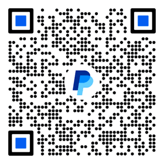

I shpejtë
Punon vetëm ajo që përdor. Kur mbyll një program, ai ndalon vërtet.
LuxyOS nis vetëm atë që përdor, punon me programet e tua të Windows dhe nuk dërgon asgjë pa lejen tënde.
Po e ndërtojmë. Së shpejti më shumë këtu.Punon vetëm ajo që përdor. Kur mbyll një program, ai ndalon vërtet.
Instalo programet që njeh me një klikim të dyfishtë.
Pa reklama dhe pa telemetri. Asgjë nuk largohet nga kompjuteri yt pa lejen tënde.
LuxyOS është falas. Regjistrimi është gjithmonë vullnetar.
Dizajne se si do të duket LuxyOS. Ende jo produkti përfundimtar; emrat dhe numrat janë shembuj.
Menyja Start, shiriti i detyrave dhe dritaret aty ku i pret. Punojnë vetëm shërbimet që përdor.

Dokumentet, Fotot dhe Shkarkimet në të njëjtin vend si në Windows.

Një dyqan për programe Windows, aplikacione Linux dhe softuer falas, me etiketa të ndershme.

Steam, kontrollues dhe drajverë grafikë, me një modalitet lojërash për performancë maksimale.

Wi-Fi, VPN, cilësimet IP, DNS i enkriptuar dhe një mur zjarri për çdo aplikacion.

Lidh Active Directory për të dhënat e kompanisë dhe shto Microsoft 365, Google ose Yahoo.

Shih cili aplikacion u lidh me çfarë. Pa telemetri, pa reklama.

Mbrojtje për programet Linux dhe Windows, e integruar dhe falas.

LuxyOS është një projekt falas dhe jofitimprurës. Për ta bërë realitet, na duhen njerëz dhe mbështetje.
Ndihmo të ndërtojmë LuxyOS. Planet, dizajnet dhe detyrat e para janë në GitHub.
Shiko në GitHubMbështet projektin financiarisht. Sponsorët nuk marrin ndikim mbi produktin dhe as të dhëna të përdoruesve.
Një dhurim vullnetar për LuxyOS: paratë shkojnë te projekti LuxyOS.
Dhuro për LuxyOS
Përmes PayPal (paypal.me/NOmanovic). Një dhurim është vullnetar dhe nuk jep të drejta apo ndikim.
Dëshiron të sponsorizosh si kompani ose organizatë? Shkruaj te sponsors@luxyos.com.
Të jesh në këtë listë është vullnetare. Ti zgjedh nëse emri yt dhe shuma shfaqen këtu.
Ende nuk ka askënd në listë.
Futesh në listë vetëm pasi pagesa jote të jetë kryer me sukses.
Logot i shfaqim të vogla (deri në 160 × 64 piksela, WebP) dhe pa lidhje. Dëshiron të të heqim? Shkruaj te sponsors@luxyos.com dhe do të të heqim në përditësimin e radhës.
LuxyOS është në fazën e dizajnit. Synimi ynë është një version i parë testues në vitin 2027. Mund ta shkarkosh sapo gjithçka të funksionojë.